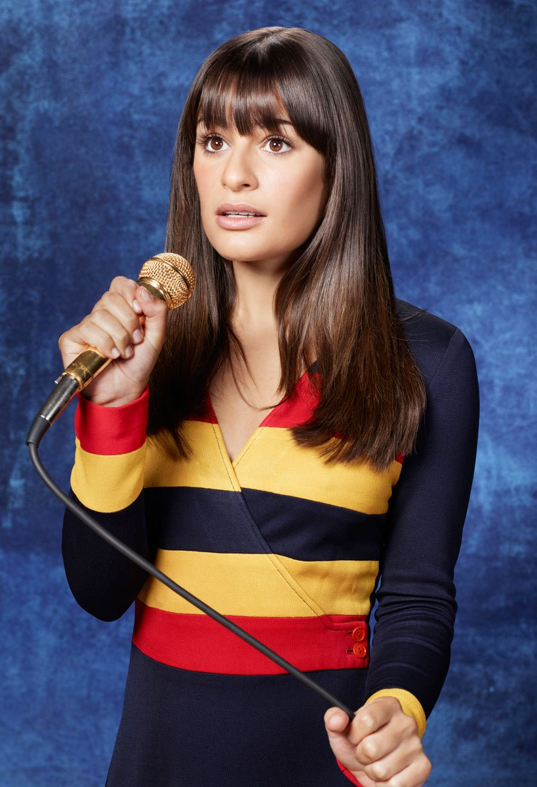
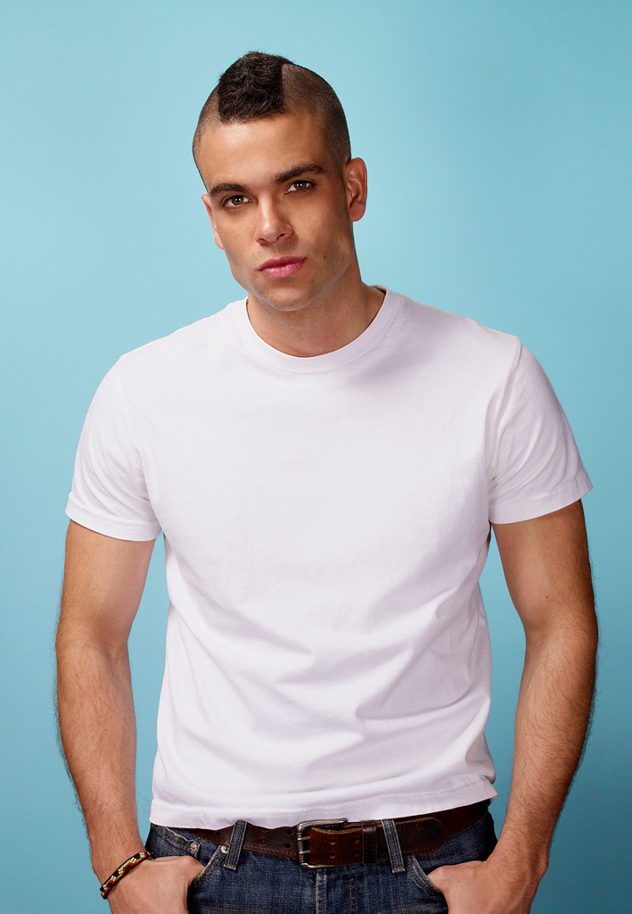
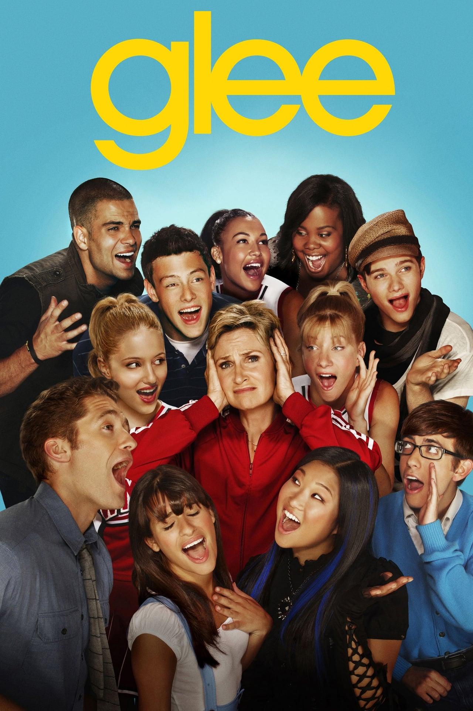
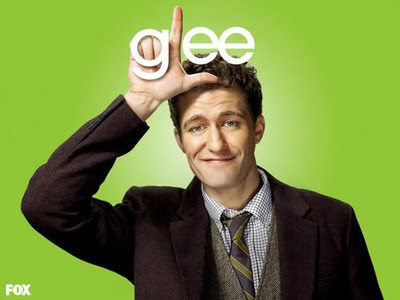

| Glee | |||||
|  |  | ||||
| Rachel Berry | Noah Pukerman | ||||
|
Rachel Berry est un personnage de fiction de la série télévisée américaine Glee, interprétée par Lea Michele et doublée en français par Kelly Marot. Elle est apparue dans le premier épisode de Glee. Rachel a été développée par les créateurs de Glee, Ryan Murphy, Brad Falchuk et Ian Brennan.
Elle est la star des New Directions de l'école de fiction William McKinley à Lima, en Ohio. Ses histoires ont vu souffrir d'aliénation par les pairs en raison de ses ambitions de Broadway, et à développer des sentiments amoureux pour Jesse St. James, un membre d'une chorale concurrente. Pendant les trois premières saisons, elle est amoureuse du quaterback de l'équipe de football et membre du Glee Club, Finn Hudson. |
 |  |
Noah Puckerman, dit Puck, est un des personnages principaux de la série télévisée américaine Glee, interprété par l'acteur, chanteur et danseur américain Mark Salling et doublé en français par Emmanuel Garijo1.
Puck apparait dès le premier épisode de la saison 1 en tant que membre de l'équipe de foot du lycée William McKinley. Guitariste et meilleur ami de Finn Hudson, il rejoint le Glee Club à la suite de ses prestations dans les Acafellas, le groupe de Will. Au long de la saison 1, il mettra enceinte Quinn Fabray, qui est alors la petite amie de Finn. Il aura également des relations successives avec Santana, Rachel et Mercedes pour remonter son niveau de popularité. Il est diplômé à la fin de la saison 3 et ne sera plus régulier dans la série à partir de la saison 4. Il devrait revenir de temps à autre. |
||
| Me contacter 👈 | |||||
| Copyright Jammie Lachance-Côté | |||||